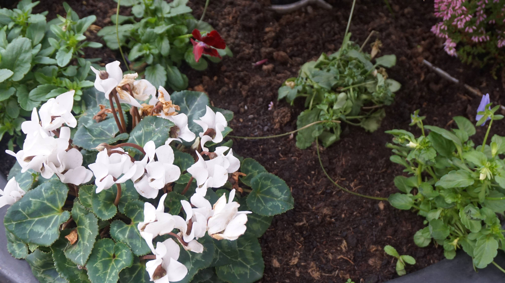

Flora

The landscape of ITB is made up of embankments, ditches, hedgerows, wetlands. There are 22 hectares of the Grassland in ITB. Grasslands store carbon and are perfect for providing cover for animals. ITB has a variety of trees on campus. Some of the many tree species on campus include Ash, Sycamore and Elder. These can be seen scattered all across campus. The oldest tree on campus can be found just beside the bus stop whuch is over 20 years old. The trees clean the air in ITB helping to create a healthier campus for everyone. The constant growth of trees on campus suggests that there is healthy soil prevalant in the land.
There are semi-naturalised hedgerows on campus which give habit to many different types of plant. Ivy is the most dominant flora found on campus. "The Grove" is the perfect place to emerse yourself in the ecology of ITB. In the meadow you can find plants that are native to ITB and different species of trees. The river Tolka runs through ITB. This creates habitat for many species and creates the wetland aspect of the landscape. There is also a man made pond at the entrance of ITB which is has nutrient rich soil and is the home of species such as floating grass, fools watercress and a vast array of wildflife.